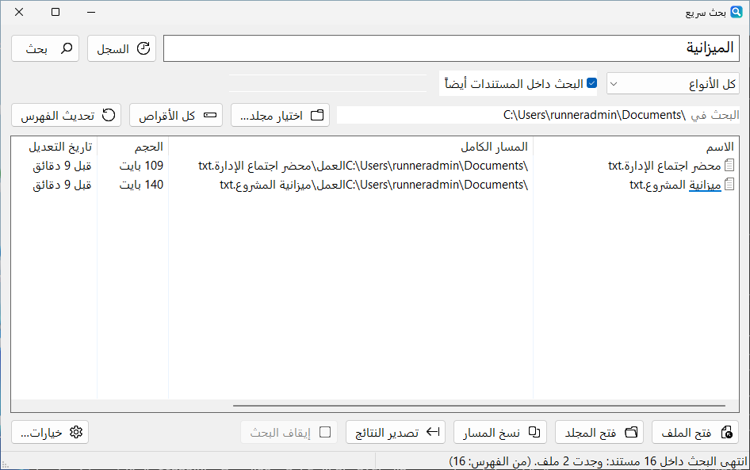

InstaFind بحث سريع
ابحث عن أي ملف على جهازك أثناء الكتابة، بالعربية أو الإنكليزية، وحتى داخل ملفات PDF وWord.
الوقت اللازم للعثور على ملف، في اختبارنا على ويندوز
- «احمد» تجد «أحمد»
- داخل PDF وWord وExcel
- Ctrl + Alt + F
- ملف واحد
مجاني · مفتوح المصدر · ويندوز 10 و11
أربعة برامج صغيرة تعمل فوراً، بلا إنترنت وبلا حساب، وتبقي ملفاتك على جهازك، بالعربية والإنكليزية.
بحث سريع · InstaFind
البرامج
مجانية بالكامل، لويندوز 10 و11، وInstaWords في المتصفح أيضاً.
ابحث عن أي ملف على جهازك أثناء الكتابة، بالعربية أو الإنكليزية، وحتى داخل ملفات PDF وWord.

تذكيرات تبقى ظاهرة على الشاشة حتى تتعامل معها، مع تكرار مرن ونسخ احتياطي موثوق.

محادثة وبرمجة مع نماذج الذكاء الاصطناعي على جهازك عبر Ollama، بلا إنترنت، مع مساعدين يجيبون من ملفاتك فقط.

اكتب أي مبلغ بالحروف للشيكات والفواتير، بالعربية أو الإنجليزية أو الفرنسية. في المتصفح أو كبرنامج ويندوز، وحتى بلا إنترنت.
100%بلا إنترنت
كل البرامج تعمل على جهازك بالكامل. الإنترنت يُستخدم فقط للتحقق من التحديثات، أو لتنزيل نموذج ذكاء اصطناعي تختاره في Lemon.
 InstaFind · بحث سريع
InstaFind · بحث سريع
يفهرس كل أقراصك مرة واحدة، ثم يُظهر النتائج أثناء الكتابة. ويفهم العربية كما تُكتب فعلاً.
اضغط Ctrl + Alt + F من أي مكان لفتح نافذة البحث.
بحث سريع · InstaFindنظرة سريعة ومنصفة على أشهر طرق البحث عن الملفات في ويندوز.
| الميزة | InstaFind | Everything | Listary | بحث ويندوز |
|---|---|---|---|---|
| السعر | مجاني | مجاني | مجاني، والنسخة Pro مدفوعة | مدمج |
| مفتوح المصدر | نعم · MIT | لا | لا | لا |
| يفهم اختلاف الإملاء العربي (أحمد = احمد) | نعم | لا | لا | لا |
| البحث داخل ملفات PDF وWord | نعم | بطيء، بأمر خاص | لا | نعم |
| نتائج فورية في كل الأقراص | نعم | نعم | نعم | لا · المجلدات المفهرسة فقط |
حسب المواقع الرسمية لكل برنامج، نوفمبر 2026. هل هناك معلومة قديمة؟ أخبرنا.
 ذكرني · المهام والتذكيرات
ذكرني · المهام والتذكيرات
تطبيق مهام وملاحظات وتذكيرات لويندوز، تبقى نافذة التذكير ظاهرة حتى تتعامل معها، فلا يضيع موعد بين الإشعارات.
ذكرني Lemon · الذكاء الاصطناعي المحلي
Lemon · الذكاء الاصطناعي المحلي
واجهة مثل ChatGPT لنماذج Ollama المحلية. محادثاتك وملفاتك لا تغادر جهازك أبداً.
يحتاج Ollama لتشغيل النماذج.الكود على GitHub
Lemon
 InstaWords · تفقيط
InstaWords · تفقيط
برنامج ويندوز أصلي يكتب أي مبلغ بالحروف للشيكات والفواتير، بالعربية والإنجليزية والفرنسية. سريع وخفيف ويعمل كاملاً دون إنترنت.
ويندوز 10/11 · 2.5 ميغابايت · تثبيت للمستخدم دون صلاحيات المدير · النسخة المحمولة وملاحظات الإصدار
تفقيط · InstaWordsلماذا FastKiwi
أدوات صغيرة تحترم جهازك وخصوصيتك ولغتك.
كل شيء يعمل على جهازك. لا حساب، ولا خوادم، ولا انتظار.
ملفاتك ومحادثاتك لا تغادر جهازك، ولا يوجد أي تتبّع. اقرأ صفحة الخصوصية.
اتجاه صحيح من اليمين لليسار في كل مكان، وبحث يفهم الهمزات والتاء المربوطة.
كل الكود منشور برخصة MIT، ويمكن لأي أحد مراجعته. اقرأه على GitHub.
يفتح فوراً ولا يثقل جهازك. أغلب برامجنا ملف واحد لا يحتاج تثبيتاً.
بلا إعلانات ولا اشتراكات ولا نسخة مدفوعة. التحديث بنقرة واحدة، وكل إصدار يُبنى ويُختبر آلياً قبل نشره.
المجتمع
كل بلاغ وفكرة ونجمة تجعل البرامج أفضل للجميع.
الملفات غير موقّعة رقمياً بعد، لذلك لا يتعرّف SmartScreen على الناشر. اضغط «مزيد من المعلومات» ثم «تشغيل على أي حال». الكود كله منشور ويمكن مراجعته، وكل إصدار يُبنى منه آلياً.
البرامج الجديدة غير الموقّعة تُصنَّف أحياناً كتهديد عن طريق الخطأ (إنذار كاذب)، خصوصاً البرامج الصغيرة المكوّنة من ملف واحد. نزّل البرامج من هذا الموقع فقط، وافحص الملف بماسح ثانٍ مثل VirusTotal إن شئت، ثم أخبرنا لنبلّغ الشركة المصنّعة لبرنامج الحماية.
نعم. كل البرامج تعمل على جهازك دون اتصال. الإنترنت يُستخدم فقط عند التحقق من التحديثات أو تنزيل نموذج ذكاء اصطناعي في Lemon (يتصل Lemon بـ Ollama الذي يعمل على جهازك أنت).
البرامج التي تأتي بمثبّت، مثل ذكرني وInstaWords، تُحذف من إعدادات ويندوز › التطبيقات › التطبيقات المثبتة كأي برنامج آخر. أما البرامج المكوّنة من ملف واحد مثل InstaFind وLemon فلا تثبّت شيئاً: أغلق البرنامج واحذف ملف .exe.
نعم، مجانية بالكامل ومفتوحة المصدر برخصة MIT. لا إعلانات ولا اشتراكات.
ويندوز 10 و11. InstaFind يعمل أيضاً على أجهزة ARM64 و32 بت، وInstaWords يعمل أيضاً في أي متصفح حديث.
انظر قسم الدعم أدناه: لكل برنامج مكانه على GitHub للبلاغات والأفكار، بالعربية أو الإنكليزية.
الدعم
راجع الأسئلة الشائعة وملاحظات الإصدار أولاً. للإبلاغ عن مشكلة أو اقتراح فكرة، افتح «Issue» في صفحة البرنامج على GitHub، بالعربية أو الإنكليزية.
اذكر إصدار ويندوز وإصدار البرنامج. البلاغات على GitHub علنية، فلا تُرفق ملفات أو معلومات شخصية.
برامج صغيرة تفعل الشيء الصحيح بسرعة.